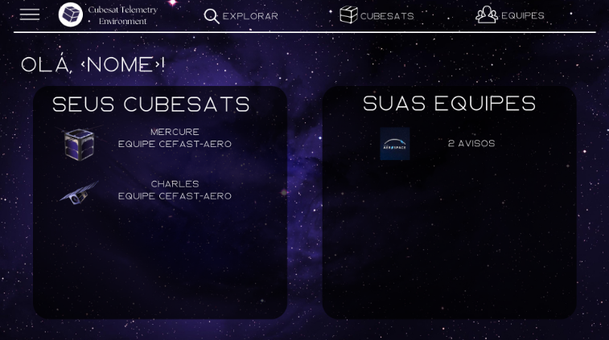
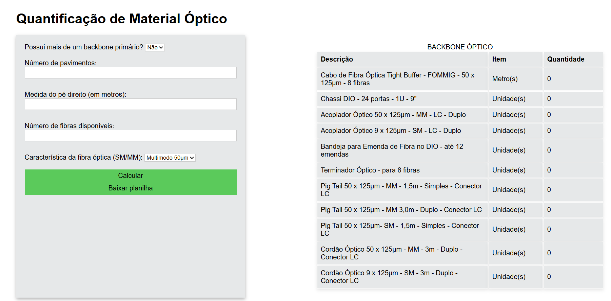

Projetos

Sistema de Reservas
Aplicação web completa para gerenciamento de reservas, com autenticação via JWT e controle de acesso por usuário. Desenvolvida com Node.js e banco de dados relacional, seguindo arquitetura em camadas (controller e service), garantindo organização, escalabilidade e boas práticas de desenvolvimento.

Cubesat Telemetry Environment - CUTE
Sistema de gerenciamento de dados de telemetria de nanossatélites, responsável pela coleta, organização e visualização das informações transmitidas em tempo real. Desenvolvido com foco em integridade dos dados e estruturação eficiente para análise.
Sistema de gerenciamento de cruzeiro
Aplicação para gerenciamento de cruzeiros, permitindo o controle de passageiros, reservas e viagens. Estruturado para garantir organização dos dados e facilitar a gestão das operações, seguindo boas práticas de desenvolvimento.

Quantificação de material óptico
Projeto desenvolvido na disciplina de Redes de Computadores com foco na quantificação de material óptico, aplicando conceitos técnicos para análise e organização de dados. Destaca a capacidade de resolver problemas práticos utilizando fundamentos da área.